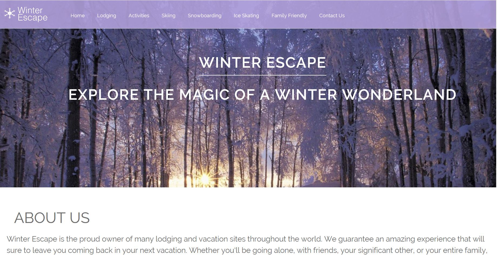

Web & Apps
Winter Escape
Winter 2016
We were given an assignment to make an index revolving around the theme 'winter escape'. We were given full control over the aspect of design and content. Through this project, we were able to learn about the importance of mobile responsiveness as well as understanding the need for adjusting our sites for print.
I was able to gain a lot from this project. Along with learning how to create a mobile responsive website and how to adjust for print, I was able to further understand develop my aesthetic when it comes to my designs.
Study Break
Winter 2016
In our winter PBL, we were placed in groups and were given the task to create an app on MIT App Inventor. Along with creating an app, we had to be able to teach middle schoolers how to create it. In order to do so, we had to create an app that was both interesting and easy enough to code and follow along.
This was a really interesting project to participate in. I was lacking in my knowledge of MIT App Inventor in the beginning of this project but I have a much better understanding of how the program works now. I also had to constantly keep in mind who our target audience was while we were designing the app and the demostration.
Shipwrecked
Fall 2016
As a project, we were placed in groups and participated in the Congressional App Challenge. We decided to make a game that was targeted to children to help them learn about the environment around them and eco-friendly activities such as recycling and picking up trash from beaches.
This project gave me my first experience with MIT App Inventor and it also gave me more experience when it came to collaborating with a team and time management. We chose to create a visual heavy game, which means we had to have a balance between making graphics and coding to work. Although we didn’t make a complete game in time, we were able to design three levels as well as a demo video to show how the game is supposed to work.
Quizmaker
Fall 2016
This project tested us on our Javascript abilities by having us create a quiz that responded through Javascript.
This project was very challenging for us because we weren't experienced with Javascript but I have definitely have a better grasp at it then I did previously. I am more confident in my Javascript skills after this project.
Chile
Spring 2016
For this project, we teamed up with the Spanish classes and created a tourist/travel website using the research they compiled of their chosen country. The country we were given was Chile.
I'm really proud of how the final product turned out. Although we were not able to incorporate everything we had planned, we were able to design it in a way that was aesthetically pleasing, user-friendly, and informative. This was also our first experience with usability testing.
Portfolio
Winter 2015
In my sophomore year, we had taken an in-depth approach to learning HTML and CSS by creating our first portfolios. We learned many different techniques through this, such as embedding videos and images, styling a nav with css, and whatnot.
Looking back at my first portfolio, I can tell that I've definitely improved, both coding-wise and design-wise.